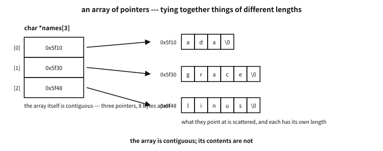
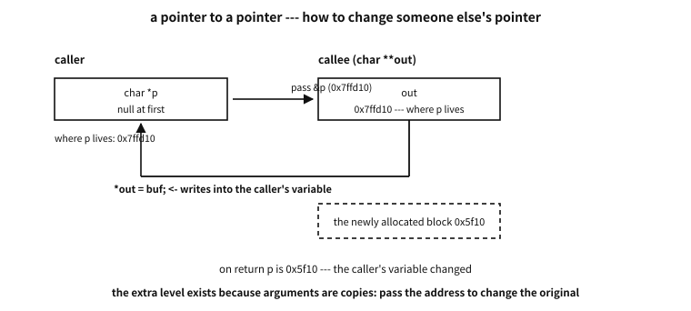

40 Arrays and pointers — when they are the same and when they are not
What to know first
sizeofLooking back
Chapter 38 taught that “the name of an array decays into the address of its first element”, and chapter 39 that a 2-D array parameter becomes int (*)[N]. Having learned both, can you answer “are an array and a pointer the same thing” in one sentence?
A. Not yet. And that is why this chapter exists. So far we have learned, one at a time, the places where decay happens. But what causes accidents in the field is the opposite — the places where it does not, and what was lost once it did. The pieces are all gathered; it is time to close them into one picture.
The need for this chapter, and its context
By the end of this chapter
The questions this chapter answers
- If rule ③ turns
int p[5]into a pointer anyway, does the[5]mean nothing? - The idiom
sizeof arr / sizeof arr[0]for counting elements is everywhere. I hear there are cases where it is dangerous. - Then are
void f(int m[][3])andvoid f(int (*m)[3])completely the same?
40.1 Why this chapter has to exist
Let us first say why this chapter remains after the previous two. Not one piece of new syntax appears in it. What it does is gather what has already been learned into one place and close it as rules. Is that worth doing?
It is. Because “an array is a pointer” is the most widespread misunderstanding in C, and at the same time the one discovered latest.
40.1.1 Why the misunderstanding is so tough
For a false sentence to spread it has to be true often. This one is exactly that.
char buf[64];
char *p = buf;
strlen(buf); /* works */
strlen(p); /* works */
printf("%s %s", buf, p); /* both work */
buf[3]; p[3]; /* both work */People learning C generally go in this order — write everything inside one function, then split into functions, and only at the end split into files. ★ Most of that road is spent in the one context where arrays and pointers really are interchangeable, because that context is the function argument. So hundreds of successes pile up before the first wrong place is ever met.
There is one more reason the two look identical to us. We have always seen main’s parameter written char *argv[] or char **argv at whim. That too works because it is a function parameter, but the context is invisible, and a false confidence grows: “C is consistent and regular about address arithmetic.”1
40.1.2 And discovery comes late
Inside one file the compiler catches it. Use as a pointer something defined as an array and the types disagree, so it is an error at once. The trouble is when the files differ. Then the compiler cannot see both sides at once. §4 confirms it for real; here is the conclusion in advance — it compiles, it links, and it dies when it runs.
40.2 What differs — five axes
Put the two side by side and split them axis by axis.
| Axis | Array | Pointer |
|---|---|---|
| What it holds | the data itself | the address of the data |
| Steps to reach it | the address is already known → one read | read the address first → then read again |
| Does it have a name | it is itself a named variable | what it points at is usually anonymous |
| Does it know its size | sizeof gives the whole size | sizeof gives the size of one address |
| Mainly used for | a fixed number of elements | dynamic structures, malloc/free |
Table 40.1 — The five axes that separate an array from a pointer
The third axis is especially interesting. Write int a[5]; and those twenty bytes carry the name a. Write int *p = malloc(20); and those twenty bytes have no name — the name p belongs to the eight bytes holding an address, not to the twenty bytes of data. Chapter 44′s point that things on the heap are nameless meets us again here.
examples/ch40/arrptr.c
/* 배열과 포인터가 어디서 갈라지는지를 한자리에서 갈라 본다.
같은 자리를 가리키는 두 값이 어떻게 다르게 행동하는지가 요점이다. */
#include <stdio.h>
static int arr[5] = { 10, 20, 30, 40, 50 };
static int *ptr = arr; /* 무너진 주소를 담는다 */
static void by_param(int p[5]) /* [5] 라고 적어도 포인터다 */
{
/* 오늘의 컴파일러는 바로 이 자리에 경고를 준다(-Wsizeof-array-argument).
경고가 맞다 — 보여 주기 위해 그 하나만 잠시 끈다. */
#if defined(__GNUC__)
# pragma GCC diagnostic push
# pragma GCC diagnostic ignored "-Wsizeof-array-argument"
#endif
printf(" inside the function sizeof p = %zu (one pointer)\n", sizeof p);
#if defined(__GNUC__)
# pragma GCC diagnostic pop
#endif
}
int main(void)
{
puts("① what does it hold - the size tells you");
printf(" sizeof arr = %zu sizeof ptr = %zu\n", sizeof arr, sizeof ptr);
printf(" element count: sizeof arr / sizeof arr[0] = %zu\n",
sizeof arr / sizeof arr[0]);
puts("\n② same address, different type - +1 skips a different width");
printf(" arr = %p\n", (void *)arr);
printf(" &arr[0] = %p (the same)\n", (void *)&arr[0]);
printf(" &arr = %p (the same - but its type is int(*)[5])\n", (void *)&arr);
printf(" arr + 1 = %p (+%td bytes)\n",
(void *)(arr + 1), (char *)(arr + 1) - (char *)arr);
printf(" &arr + 1 = %p (+%td bytes - it skips the whole array)\n",
(void *)(&arr + 1), (char *)(&arr + 1) - (char *)arr);
puts("\n③ which one can move");
ptr = ptr + 2; /* 포인터는 옮길 수 있다 */
printf(" moving ptr two slots gives *ptr = %d\n", *ptr);
/* arr = ptr; <- 배열 이름은 수정 가능한 좌변값이 아니다: 컴파일 오류 */
ptr = arr;
puts("\n④ a subscript is a pointer offset - which is why it can be reversed");
printf(" arr[3] = %d, *(arr + 3) = %d, 3[arr] = %d\n",
arr[3], *(arr + 3), 3[arr]);
puts("\n⑤ pass it to a function and the size disappears");
printf(" sizeof arr before the call = %zu\n", sizeof arr);
by_param(arr);
return 0;
}
Output
① what does it hold - the size tells you
sizeof arr = 20 sizeof ptr = 8
element count: sizeof arr / sizeof arr[0] = 5
② same address, different type - +1 skips a different width
arr = 0x55dc1c7c5020
&arr[0] = 0x55dc1c7c5020 (the same)
&arr = 0x55dc1c7c5020 (the same - but its type is int(*)[5])
arr + 1 = 0x55dc1c7c5024 (+4 bytes)
&arr + 1 = 0x55dc1c7c5034 (+20 bytes - it skips the whole array)
③ which one can move
moving ptr two slots gives *ptr = 30
④ a subscript is a pointer offset - which is why it can be reversed
arr[3] = 40, *(arr + 3) = 40, 3[arr] = 40
⑤ pass it to a function and the size disappears
sizeof arr before the call = 20
inside the function sizeof p = 8 (one pointer)
Output ① is the first and fourth axes. sizeof arr is 20 and sizeof ptr is 8. Two values naming the same place answer differently when asked their own size.
② is the most valuable part. arr, &arr[0] and &arr are all the same address. Yet add 1 and they split.
arr + 1— oneintover, +4 bytes&arr + 1— the whole array over, +20 bytes
★ Same address, different type, different value. arr decayed into int *; &arr did not decay and is int (*)[5]. The declaration reading of chapter 61 pays here — read the two type names and you can see the difference.
③ is another face of the third axis. ptr can move; arr cannot. arr = ptr; is a compile error, because an array name is not a modifiable lvalue. The example leaves it in a comment.
40.3 Steps to reach it — this is the real difference
The second of the five axes is the most fundamental. And you can see it. The very same x[i] is translated into different machine code for an array and for a pointer.
extern int a[];
extern int *p;
int via_array(int i) { return a[i]; }
int via_pointer(int i) { return p[i]; }Compiled with gcc -O2 -c and looked at with objdump -d (x86-64).
a[i] — array | p[i] — pointer |
|---|---|
movslq %edi,%rdi | ★ mov 0x0(%rip),%rax— reads the pointer value from memory |
lea 0x0(%rip),%rax — the array’s address is known at compile time | movslq %edi,%rdi |
mov (%rax,%rdi,4),%eax — read once | mov (%rax,%rdi,4),%eax — read again |
| memory accesses: 1 | memory accesses: 2 |
Table 40.2 — The number of steps an indexed access takes
★ The difference shows up as one instruction. The array side ends with a lea (address computation); in that same slot the pointer side has a mov — a read that fetches the pointer value out of memory. The array side has no such read at all, because the array’s address is fixed at compile time.
Two things follow.
First, why both extern char a[]; and extern char a[100]; work. The compiler only needs to make offsets from the start, so it need not know the total length. The dimensions other than the outermost, though, it must know — that is how it decides how many bytes to step (the rule from chapter 39).
Second, why the folklore says pointers beat arrays. It used to be held that a subscript inside a loop costs a multiply each time, so stepping a pointer is faster. ★ Today that folklore is mostly wrong. Subscripting is defined in terms of pointers, so an optimiser commonly turns the two into the same form; and the array side often carries clearer aliasing information, which helps vectorisation.
A common misconception. “In a loop, a pointer is faster than a subscript”
For the common shape of walking a one-dimensional array there is now almost no difference, for two reasons. First, the standard defines a[i] as *(a + i), so the compiler builds the same intermediate form from either. Second, the scaling multiply is a single shift when the element size is a power of two — and even that folds into the addressing mode ((%rax,%rdi,4)), which the last row of Table 40.2 shows for real.
There are conditions, though. If the element is a struct whose size is not a power of two, a real multiply remains; and where several pointers might name the same storage the compiler turns conservative and reloads more. The answer then is not “switch to pointers” but measure and decide, and to give the compiler the aliasing information it lacks.
40.4 The accident that crosses a file
Now the place §1 promised. The definition is an array; the declaration says pointer.
/* def.c */ char msg[16] = "ABCDEFGHIJKLMNO";
/* use.c */ extern char *msg; /* <- a lie */
printf("%c", msg[0]);We compiled the two files separately, linked and ran them.
| Step | Result |
|---|---|
gcc -Wall -Wextra -c def.c use.c | ★ not one warning |
gcc -o mism def.o use.o | ★ not one warning |
./mism | Segmentation fault (exit status 139) |
Table 40.3 — What happens when the declarations disagree
What happened. use.c believes that an address lives at the place called msg. So it reads eight bytes there and uses them as an address. But what those eight bytes actually contain are the characters 'A'~'H'. Read little-endian they make the number 0x4847464544434241, and going to that address kills the program.
★ Be precise about what is at fault here. The compiler did nothing wrong: looking at use.c alone, that code is perfectly right, and the linker joins names without knowing types. What was wrong was the promise a human made.
Counter-example. Writing declarations by hand and letting them drift from the definition
/* written out in each file that uses them */
extern char *msg;
extern int count;Write extern by hand in each file and the definition can change while those declarations do not. And as we just saw, nobody warns you.
There is only one cure — put the declaration in a header, once, and have the defining side include that header too. Then definition and declaration meet inside one translation unit and the compiler catches the mismatch (chapter 53).
/* msg.h */ extern char msg[16];
/* def.c */ #include "msg.h" <- the defining side includes it too. This line is the point
char msg[16] = "...";Keep that habit and this section’s accident cannot happen at all. C has no cross-file type checking, so we make the header play that role.
In practice. The same shape occurs outside arrays
Definitions drifting from declarations is not peculiar to arrays and pointers. Defining something as int and declaring it long, or omitting static so that two files define one name as two different things, has the same root — C’s structure of each translation unit believing separately.
Today’s tools do help. Turn on link-time optimisation and the compiler sees both translation units together, catching some mismatches; build the example above with -flto and a warning appears. But this is a backstop, not a replacement for the discipline. There is no reason to leave to an optimisation flag what one header would prevent.
40.5 When they do become the same — three rules
Now the other direction. Close the places where decay does happen, as rules, with the standard’s clauses.
| Rule | Content |
|---|---|
| ① in an expression | an expression of array type is converted to a pointer to its first element, with a few exceptions (next section) |
| ② the subscript | a[i] is by definition *(a + i) — the subscript operator is a pointer offset |
| ③ the parameter | a function parameter declared “array of T” is rewritten as “pointer to T” |
Table 40.4 — The three rules by which an array becomes a pointer
What matters is where each rule is used.
Rule ① is what makes int *p = arr; legal, and why strlen(buf) works.
Rule ② is not notation but definition. So a[i] and *(a+i) are not “the same result” but “the same thing”. §7 shows an amusing consequence.
Rule ③ is the most often misread. It happens in the one context of a function parameter and nowhere else. Everywhere else an array declaration is an array declaration and a pointer declaration is a pointer declaration — §4′s accident is exactly what happens when that is not known.
Q. If rule ③ turns int p[5] into a pointer anyway, does the [5] mean nothing?
A. To the compiler it means nothing. Output ⑤ showed it — sizeof p is 8, one pointer, not five cells.
★ But two uses remain. The first is a signal to the reader: int table[] says “several elements follow here” and int *table does not. The second matters more: today’s compilers check this slot. Using sizeof p in the example raised -Wsizeof-array-argument, and we muted just that one warning to show the effect. Writing [5] tells the compiler “this person expects an array”, and it helps.
The [static N] notation from chapter 38 pushes this one step further into a promise that «at least N elements arrive». It is not that the size means nothing; more precisely, it means something outside the language’s type system.
40.6 The places that do not decay
Rule ① has exceptions, and they matter enormously in practice. Knowing where decay does not happen is knowing what an array really is.
| Place | What it becomes | Why it matters |
|---|---|---|
sizeof arr | the whole array size | you can count the elements — after decay you cannot |
&arr | T (*)[N] — pointer to the array | &arr + 1 steps over the whole array |
alignof(arr) | the array’s alignment requirement | same reason as sizeof |
typeof(arr) | T [N] as it stands (C23) | an array type can be copied verbatim |
| initialising from a string literal | char a[] = "..." makes a copy | ★ utterly unlike char *p = "..." |
Table 40.5 — The places decay does not happen
The last row is especially important. Two lines that look almost the same do entirely different things.
char a[] = "gooseberry"; /* an array - mine, so I may change it */
char *p = "breadfruit"; /* merely points at a literal - changing it is undefined */a is my own array made by copying the literal’s contents. p merely points at a literal living somewhere in the program. So a[0] = 'G'; is fine and p[0] = 'B'; is undefined behaviour — usually placed in a read-only region and killed at run time (chapter 41).
Q. The idiom sizeof arr / sizeof arr[0] for counting elements is everywhere. I hear there are cases where it is dangerous.
A. There are. ★ That idiom is right only while arr really is an array. But inside a function, rule ③ has already made an array parameter a pointer. Use the same idiom there and you compute «pointer size ÷ element size» — always 2 for an int array on a 64-bit machine.
void f(int a[10]) {
size_t n = sizeof a / sizeof a[0]; /* 2, not 10 */
}So use the idiom only in the scope where the array was declared. Across a function boundary, C’s habit is to pass the length as a separate argument — and the places where that habit was skipped because it was tiresome are exactly the overflow vulnerabilities (chapter 42). The -Wsizeof-array-argument mentioned earlier aims at precisely this mistake.
40.7 Why 6[a] is legal
Accept rule ② as a definition and an amusing consequence follows. If a[i] is *(a + i), then since addition commutes *(i + a) is the same thing, and hence so is i[a].
Output ④ confirmed it — arr[3], *(arr + 3) and 3[arr] are all 40.
There is no occasion to write this in real code. But it is worth knowing, because the very legality of the notation proves that the subscript is the syntax of pointers, not of arrays. Had [] been an array-only device, 3[arr] would have been nonsense.
A common misconception. “[] is an operator that attaches to arrays”
It is not. The left operand of [] is a pointer, and an array merely decays into that slot. That is why a pointer can be subscripted (p[3]), why things that are not arrays can be, and why the order may even be reversed.
Accept this and several things are explained at once. Why has C no subscript range checking — because there is no guarantee in the first place that a subscript is an array access. Why does p[-1] pass the grammar — because there is no reason an offset may not be negative. The language does not know what there would be to check.
40.8 Parameter conversion happens one layer only
This is where people most often go wrong extending rule ③ to more dimensions. ★ An array of arrays does not become a “pointer to pointer”. It becomes a “pointer to array”.
examples/ch40/params.c
/* 매개변수에서 배열이 포인터로 고쳐지는 규칙은 「한 겹만」 적용된다.
그리고 C99 이후에는 크기를 함께 넘겨 진짜 2차원 매개변수를 쓸 수 있다. */
#include <stdio.h>
/* ① 배열의 배열 → 「배열에 대한 포인터」 (포인터의 포인터가 아니다) */
static void take_2d(int (*m)[3], size_t rows)
{
printf(" int m[][3] → int (*m)[3] : sizeof m = %zu, sizeof *m = %zu\n",
sizeof m, sizeof *m);
printf(" m[1][2] = %d (one row is %zu bytes)\n", m[1][2], sizeof *m);
(void)rows;
}
/* ② 포인터의 배열 → 「포인터에 대한 포인터」 (argv 가 이 모양이다) */
static void take_argvish(char **v)
{
printf(" char *v[] → char **v : v[0]=\"%s\", v[1]=\"%s\"\n", v[0], v[1]);
}
/* ③ C99 이후 — 크기를 먼저 받으면 진짜 가변 2차원 매개변수가 된다 */
static long sum_2d(size_t rows, size_t cols, int m[rows][cols])
{
long s = 0;
for (size_t i = 0; i < rows; i++)
for (size_t j = 0; j < cols; j++)
s += m[i][j];
return s;
}
int main(void)
{
int grid[2][3] = { { 1, 2, 3 }, { 4, 5, 6 } };
int wide[2][4] = { { 1, 1, 1, 1 }, { 2, 2, 2, 2 } };
char *names[] = { "hana", "dul" };
puts("① passing an array of arrays");
take_2d(grid, 2);
puts("\n② passing an array of pointers");
take_argvish(names);
puts("\n③ pass the sizes too and one function takes any width");
printf(" sum_2d(2,3,grid) = %ld\n", sum_2d(2, 3, grid));
printf(" sum_2d(2,4,wide) = %ld <- a shape take_2d cannot accept\n",
sum_2d(2, 4, wide));
return 0;
}
Output
① passing an array of arrays
int m[][3] → int (*m)[3] : sizeof m = 8, sizeof *m = 12
m[1][2] = 6 (one row is 12 bytes)
② passing an array of pointers
char *v[] → char **v : v[0]="hana", v[1]="dul"
③ pass the sizes too and one function takes any width
sum_2d(2,3,grid) = 21
sum_2d(2,4,wide) = 12 <- a shape take_2d cannot accept
| What was passed | What the parameter becomes | How far it changed |
|---|---|---|
array of array char c[8][10] | char (*c)[10] — pointer to array | one layer |
array of pointer char *c[15] | char **c — pointer to pointer | one layer |
pointer to array char (*c)[64] | unchanged | not at all |
pointer to pointer char **c | unchanged | not at all |
Table 40.6 — In a parameter only the outer layer changes
Put the first two rows side by side and the rule is plain. Only the outermost layer becomes a pointer; the inside is untouched. Output ① is the proof — sizeof m is 8 (a pointer) while sizeof *m is 12, a row of three ints.
★ Now a long-standing puzzle resolves. Why is main’s second parameter char **argv? Because argv is an array of pointers (the second row). Had it been an array of arrays it would have become something like char (*argv)[15]. Output ② mimics exactly that shape.
Q. Then are void f(int m[][3]) and void f(int (*m)[3]) completely the same?
A. They are. Rule ③ rewrites the former into the latter. take_2d in the example used the latter notation because that is what it actually is, and people who use the former are conveying to a human reader that «several rows follow». Just as in chapter 39.
Watch the parentheses. int *m[3] is a different thing entirely — «an array of three pointers» — and in a parameter slot it is rewritten again, to int **m. Chapter 61′s precedence rule pays here.
40.9 Three working patterns — seen with addresses
The rules are all out now. What remains is to see what shape they take in real code, addresses included. All three go past you several times a day.
examples-en/ch40/ptr_shapes.c
/* What a pointer actually points at - printed as addresses.
The addresses themselves differ from run to run (ASLR); the *relations* never do:
the stride, which one points where, and one level versus two. */
#include <stddef.h>
#include <stdio.h>
#include <stdlib.h>
#include <string.h>
/* 1. An array of pointers vs a 2-D array - same data, different layout */
static void two_shapes(void)
{
/* array of pointers: three cells hold addresses; the text is scattered */
const char *names[] = { "ada", "grace", "linus" };
/* 2-D array: one block, every row the same width */
char table[3][8] = { "ada", "grace", "linus" };
printf(" names: sizeof = %zu (%zu cells x %zu)\n",
sizeof names, sizeof names / sizeof names[0], sizeof names[0]);
for (size_t i = 0; i < 3; i++)
printf(" names[%zu] -> %p \"%s\" (%zu bytes)\n",
i, (const void *)names[i], names[i], strlen(names[i]) + 1);
printf(" table: sizeof = %zu (%zu rows x %zu)\n",
sizeof table, sizeof table / sizeof table[0], sizeof table[0]);
for (size_t i = 0; i < 3; i++)
printf(" &table[%zu] = %p \"%s\" (step %td)\n",
i, (const void *)table[i], table[i],
i == 0 ? (ptrdiff_t)0 : table[i] - table[i - 1]);
}
/* 2. A pointer to a pointer - where someone else's pointer gets changed */
static int take_buffer(char **out, size_t n)
{
char *buf = malloc(n);
if (buf == NULL)
return -1; /* on failure, leave *out alone */
memset(buf, 'x', n - 1);
buf[n - 1] = '\0';
*out = buf; /* <- writes into the caller's variable */
return 0;
}
/* The same job with one level - only the copy changes, the original does not.
(It is read once to avoid a set-but-unused warning; that the written value
never leaves the function is precisely this function's point.) */
static void does_nothing(char *out, size_t n)
{
char *buf = malloc(n);
if (buf != NULL) {
memset(buf, 'y', n - 1);
buf[n - 1] = '\0';
out = buf; /* this assignment ends inside this function */
printf(" (inside: the local copy now points at %p)\n", (void *)out);
free(buf);
}
}
static void out_parameter(void)
{
char *p = NULL;
printf(" before the call: p = %p, and p lives at &p = %p\n",
(void *)p, (void *)&p);
does_nothing(p, 8);
printf(" after passing one level: p = %p (unchanged)\n", (void *)p);
if (take_buffer(&p, 8) == 0) {
printf(" after passing two levels: p = %p \"%s\"\n", (void *)p, p);
free(p);
}
}
/* 3. Sorting an array of pointers - the data stays, only the order changes */
static int by_text(const void *a, const void *b)
{
return strcmp(*(const char *const *)a, *(const char *const *)b);
}
static void sort_without_moving(void)
{
const char *v[] = { "linus", "ada", "grace" };
const void *before[3];
for (size_t i = 0; i < 3; i++)
before[i] = (const void *)v[i];
qsort(v, 3, sizeof v[0], by_text);
for (size_t i = 0; i < 3; i++) {
int moved = 1;
for (size_t j = 0; j < 3; j++)
if (before[j] == (const void *)v[i])
moved = 0;
printf(" v[%zu] -> %p \"%s\"%s\n", i, (const void *)v[i], v[i],
moved ? " (a new address?!)" : "");
}
puts(" the three addresses are the original ones - not one byte of text moved.");
}
int main(void)
{
printf("[an array of pointers vs a 2-D array]\n");
two_shapes();
printf("\n[a pointer to a pointer - changing the caller's variable]\n");
out_parameter();
printf("\n[sorting an array of pointers moves pointers, not data]\n");
sort_without_moving();
return 0;
}
Output
[an array of pointers vs a 2-D array]
names: sizeof = 24 (3 cells x 8)
names[0] -> 0x55d1e233c008 "ada" (4 bytes)
names[1] -> 0x55d1e233c00c "grace" (6 bytes)
names[2] -> 0x55d1e233c012 "linus" (6 bytes)
table: sizeof = 24 (3 rows x 8)
&table[0] = 0x7ffcbebe14e0 "ada" (step 0)
&table[1] = 0x7ffcbebe14e8 "grace" (step 8)
&table[2] = 0x7ffcbebe14f0 "linus" (step 8)
[a pointer to a pointer - changing the caller's variable]
before the call: p = (nil), and p lives at &p = 0x7ffcbebe1528
(inside: the local copy now points at 0x55d201f436b0)
after passing one level: p = (nil) (unchanged)
after passing two levels: p = 0x55d201f436b0 "xxxxxxx"
[sorting an array of pointers moves pointers, not data]
v[0] -> 0x55d1e233c008 "ada"
v[1] -> 0x55d1e233c00c "grace"
v[2] -> 0x55d1e233c012 "linus"
the three addresses are the original ones - not one byte of text moved.
40.9.1 1. An array of pointers — tying together things of different lengths
const char *names[3] and char table[3][8] hold the same three words with completely different layouts.

Figure 40.1 — An array of pointers — the array itself is contiguous, what it points at is scattered.
The numbers the listing printed are gathered in Table 40.7.
| What | const char *names[3] | char table[3][8] |
|---|---|---|
| what a cell holds | three addresses, 8 bytes each | the characters themselves, three 8-byte rows |
sizeof | 24 — the size of the addresses | 24 — row width × row count |
| where the text lives | scattered — in the listing the addresses ran 4, 6 and 6 bytes apart | flush inside the array — the stride is exactly 8 |
| length | each its own. Long names fit too | the row width is the ceiling; nine characters do not fit |
| swapping two rows | change one pointer | copy the characters wholesale |
| editing the text | if they are literals you cannot (chapter 20) | you can — it is your own array |
Table 40.7 — The same three words, two layouts
The rule of thumb reduces to one line — if the contents never change and the lengths differ, an array of pointers; if you will edit them and the lengths are even, a 2-D array. argv is the former (chapter 53); a fixed-width table is the latter.
The listing’s third group shows what an array of pointers is really worth. Three words were sorted with qsort and not one byte of text moved — only the order of three addresses changed. The bigger the data and the more frequent the comparisons, the more that difference matters.
40.9.2 2. A pointer to a pointer — where someone else’s pointer is changed
char ** feels strange mostly because “why one more level?” goes unanswered. The answer is already in chapter 33 — arguments are copies.

Figure 40.2 — To change the caller’s pointer you must pass the place where that pointer lives.
The listing’s second group prints both sides.
does_nothing(p, 8)— passed one level, the function gets a copy ofp. Put a new address in the copy and on returnpis still null.take_buffer(&p, 8)— pass&p(where the pointer lives) and the function writes into that place with*out = buf. On returnpholds the new address.
“To change a value, pass the place where it lives” is not a new rule. It is exactly the rule that had us pass int * to change an int (chapter 35), repeated one storey up.
| What you mean to change | The parameter | Inside the function |
|---|---|---|
an int value | int *n | *n = 5; |
| the contents a pointer points at | char *s | s[0] = 'A'; — no extra level needed |
| the pointer itself | char **out | *out = buf; |
| one cell of an array of pointers | char **v (a decayed array) | v[i] = buf; — same level, different meaning |
Table 40.8 — One more level for each thing you mean to change
The fourth row is the trap. The same type char ** serves both “please change my one pointer” and “here is an array of pointers”. The type does not separate them; names and documentation do — which is why output parameters are called out and arrays get plural names.
Counter-example. Touching *out on failure
A function with an output parameter owes two promises.
int take_buffer(char **out, size_t n); /* 0 means *out was filled in */- On success it writes
*out. - On failure it leaves
*outalone. That is why the listing’stake_bufferreturns-1immediately whenmallocfails.
Without this rule the caller is left guessing between “it failed, so the old value is still there” and “it failed, so it must be null” — and double frees and null dereferences come out of that gap. It is the smallest case of failure atomicity (chapter 89).
40.9.3 3. Changing the order without moving the data
Put the first two together and a large working pattern appears — leave the data where it is and handle only pointers. Sorting is the classic case (the listing’s third group), and indexes, catalogues and priority queues all rest on the same idea. The price is chapter 11′s locality: every pointer followed is a jump to a scattered place, so when the data is small, moving it wholesale can be faster.
40.10 So what C cannot do — and the half-told rest
Knowing all the rules above, one of C’s old limits emerges as a logical consequence.
There was (for a long time) no general way to pass a multidimensional array of arbitrary size to a function. The reason is exactly what §8 showed: the parameter becomes a “pointer to array”, and to fix how far one step of that pointer moves, the inner dimension must be known at compile time.
So the function below accepts only arrays exactly three wide.
void take_2d(int (*m)[3], size_t rows); /* [2][3] and [999][3] are fine */
/* [2][4] is not */People have dodged this wall three ways, and all three cost something.
| Dodge | How | Cost |
|---|---|---|
| array of pointers | switch to char **, allocating each row | rows scatter, losing locality. more allocation and freeing |
| flattening | take one dimension and write m[i * cols + j] | ★ the index arithmetic is done by hand — easy to get wrong |
| fixing it | pin the width to one value | generality is given up |
Table 40.9 — The ways around returning an array
40.10.1 What C99 changed
★ In 1999 the wall was partly torn down. Take the sizes as earlier parameters and you may use those names as dimensions in the parameters that follow.
long sum_2d(size_t rows, size_t cols, int m[rows][cols]);Output ③ runs exactly this. One function takes [2][3] and [2][4] alike — impossible with take_2d. The inner dimension being known at run time, the compiler emits the right index arithmetic for you. You keep flattening’s benefit (contiguous memory) and lose its danger.
Platform note. Why this solution is only half of one
This notation uses the same machinery as the variable-length array (VLA), so conditions come with it.
First, C11 made it optional. An implementation may define __STDC_NO_VLA__ and not support it. Second, MSVC does not support it. Microsoft’s C compiler has long refused the notation. Third, the Linux kernel removed VLAs (2018), on the grounds that stack usage could not be known statically.
★ There is a distinction to draw here, though. What the kernel objected to was «a local array whose size is decided at run time and taken from the stack», while what we used is «a parameter telling us how to view storage that already exists». The latter takes no stack. So where portability is not at stake, the parameter use is still worth recommending today.
Where portability is at stake, the answer remains flattening plus accessor functions. Confine the index arithmetic to one place and the danger shrinks (chapter 39′s flattening contract).
In practice. A verdict from 1994 and the answer in 2026
This limit was long counted among C’s signature weaknesses. In 1994 van der Linden pinned it down as an «inherent limitation of the C language», writing that it makes certain kinds of program — numerical analysis, say — much harder to write. The three dodges he listed are the three in the table above.2
★ What is interesting is that in the same book he noted, with unease, that «some people are now talking about adding Pascal’s conformant arrays to C». And five years later C99 added a feature pointing in exactly that direction.
So today’s accurate statement is this — the limit was real, the standard solved it, and the solution did not land in every implementation. Both “C cannot do this” and “C can now” are half-truths.
40.11 Choosing between them — judgement in practice
| When | Use this |
|---|---|
| the count is fixed at compile time | an array. sizeof can count it and there is no allocating or freeing |
| the count is decided at run time | pointer + malloc. And carry the length along with it |
| passing to a function | whichever you use, pass the length separately. The parameter is a pointer regardless |
| a read-only string | const char *. If it is to be changed, make a copy with char a[] |
| 2-D with a fixed width | a T (*)[N] parameter |
| 2-D with a varying width | T m[rows][cols] (where portability allows) or flattening plus accessors |
Table 40.10 — Choosing between array and pointer for the job
Recap
| to remember | the point |
|---|---|
| root of the misunderstanding | a learning path that drills the interchangeable context (function arguments) most |
| five axes | what is held / steps to reach / name / size / use |
| the real difference | ★ array = 1 memory access, pointer = 2 — visible in the assembly |
| the file boundary | definition T a[] / declaration T *a → compiles, links, dies at run time |
| the cure | declare once in a header. The defining side includes it too |
| three rules | decay in an expression / subscript = offset / parameter rewriting |
| where decay does not happen | sizeof, &, alignof, typeof, string-literal initialisation |
6[a] | legal — proof that the subscript is the pointer’s syntax |
| parameter conversion | ★ one layer only. array of array → pointer to array |
char **argv | because argv is an array of pointers |
| C’s old limit | arbitrary multidimensional parameters — C99 solved it with m[rows][cols] (MSVC excepted) |
Table 40.11 — Arrays and pointers — what to remember
We have closed the relation between arrays and pointers into rules. The next chapter builds loops on top of that relation — nested loops, how to get out of them, and making a block for a macro.
Notes
- The diagnosis that the learning path hardens this misunderstanding, and the seed of the five-axis contrast and the parameter conversion table below, come from chapters 2, 8 and 9 of Peter van der Linden, Expert C Programming: Deep C Secrets (Prentice Hall, 1994). The choice of items, the examples and the measurements are this book’s own. ↩
- van der Linden, Expert C Programming — the passage on passing multidimensional arrays to functions. It is striking that he chose to show four attempts and admit that every one falls short. ↩